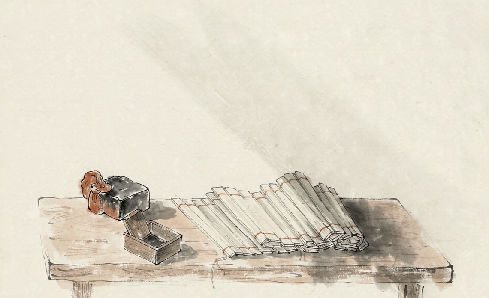
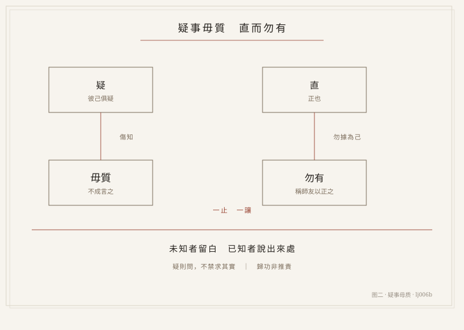

曲礼上 · 一·七 · 第 6 课
前四课讲取舍，这一课讲分寸的另一面：说与不说，以及说了之后归谁。
说什么事：说你没弄明白的事，不要替它定案；你弄明白了的事，不要把这份明白据为己有。
落在哪一层：义。两句话管的是一个「知」字的礼。
为何编在此位：取舍在外，知在内。财、难、争、分都能看见，疑与直只发生在嘴里；所以放在一·七，作为这一小段的收：把外面的四毋，收回到舌头上。
【经】疑事毋質，直而勿有。
疑事 不止是「不懂的事」，是「彼此都还没定的事」。郑注「彼己俱疑」四字，把「疑」定为双方共在的未定状态。
質 郑注：「質，成也。」质不是质问，是把未定之事说成定案。今人读「质」为「正」「证」，与此注不同，须辨。
毋質 郑注：「彼己俱疑，而己成言之，終不然，則傷知。」——伤的不是人，是「知」：把猜的说成定的，久了连自己都分不清哪句是知道、哪句是猜的。
直 郑注：「直，正也。」指把不正的说正、把不明的说明。
勿有 有，据为己有。郑注：「己若不疑，則當稱師友而正之，謙也。」——「称师友」三字最实：正了以后，说来处，不说是自己想出来的。
双方都还没定的事，不要替它作成定案；已经正了的事，说来处，不要据为己有。
未定者不定之，已正者不私有——「知」也要守礼。
第一层 疑是常态 「彼己俱疑」四字很宽厚：它承认有大量事情是真的不知道。礼在这里不要求人无所不知，只要求人别把不知说成知。
第二层 质与断 「成言之」是郑注对「质」的展开：把一个还在动的东西说死。说死之后，别人再提异议，就要先推翻你的定案，成本全转给了对方。这就是「傷知」的具体机制：不是骗人，是让人不敢再想。
第三层 直与有 「直而勿有」比上一句更难。人一旦把事想通了，第一个念头常是「这是我发现的」。郑注把解法落在「称师友」——不是客套，是留一条渠：明白是有来路的，说来路，明白才可传递。据为己有，明白就成了一件私产，别人只能仰望，不能接着想。
与今日何干 今日最不缺「定案」：一句断言、一个标签、一段视频，就把还在动的事说死了。此句给两条：没定的事，留白；定了的事，说出处。
| 左 | 右 |
|---|---|
| 疑事毋质：双方未定，不替它定 | 直而勿有：正了之后，说出处 |
| 质是成，不是问 | 成言之，伤的是「知」 |
| 留白不是不作为 | 归功不是推责 |
| 勿有，才可传递 | 据为己有，明白成私产 |

